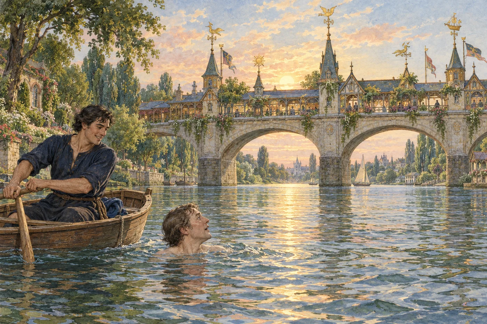
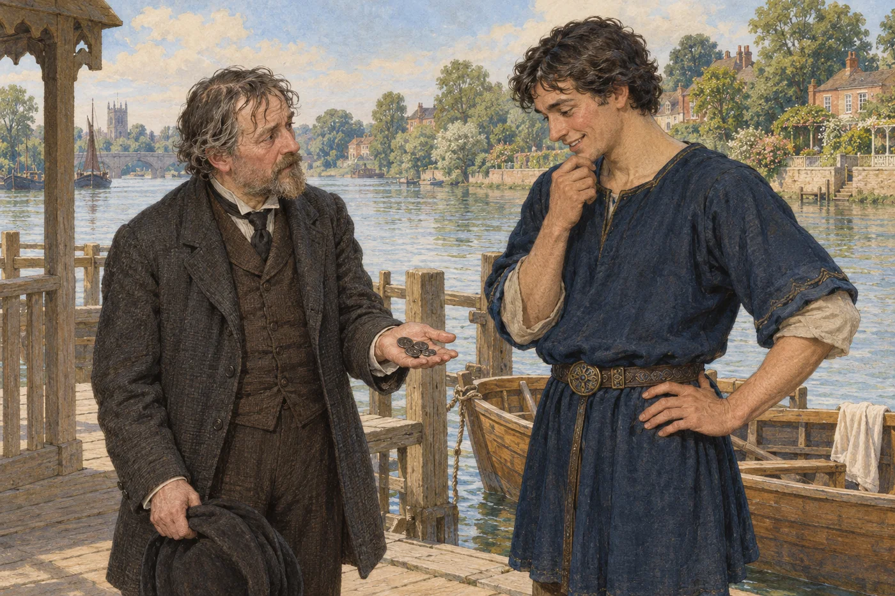

読書注 1
ハマースミスを流れるテムズの潮
ハマースミスのテムズは潮の満ち引きが及ぶ区間にある。ここでは上げ潮のため、水は通常の下流方向とは逆に動き、のちに舟がチジック側へ流される。未来で川が澄んでも、潮汐まで消えたわけではない。Port of London Authority
本文へ戻る目を覚ますと、寝具を蹴飛ばしていた。無理もない。暑いうえに、太陽が明るく照っていたのだ。私は跳ね起きて身を洗い、急いで服を着た。だが、まるで長い長い眠りから覚めたばかりのように、頭はぼんやりして半分眠っており、眠りの重みを振り払えなかった。実のところ、自分の部屋を見てそう認識したというより、当然わが家の自室にいるものと思い込んでいた。
着替えを終えると、あまりの暑さに、部屋を出て家の外へ急いだ。最初に覚えたのは、新鮮な空気と心地よい風に触れた、えもいわれぬ安堵だった。次に、頭が少しずつ働きだすにつれて、限りない驚きが押し寄せた。昨夜、床に就いたときには冬だった。それが今、川辺の木々を見るかぎり、季節は夏、どうやら六月初めの美しく明るい朝になっている。それでもテムズは変わらずそこにあり、昨夜は月の下で輝いていた川面が、今は太陽を受けてきらめき、潮も満ちきる間近だった。
私はまだ、のしかかるような感覚から抜け出していなかった。どこにいたとしても、その場所をはっきり意識できなかっただろう。見慣れたテムズを前にしながら戸惑ったのも無理はない。目まいがし、妙な気分だった。人々がよく舟を雇って川の中ほどで泳いでいたのを思い出し、自分もそうしようと思った。
ずいぶん早い時刻のようだが、ビフィンのところへ行けば、舟を出してくれる者がいるだろう、と私は考えた。しかし、ビフィンのところまで行くどころか、そちらへ左に曲がることさえなかった。ちょうどそのとき、わが家の正面に船着場があるのに気づいたからだ。位置からすれば、隣人がこしらえた船着場のはずだったが、どういうわけか、それとも違って見えた。
そこへ下りてみると、案の定、繋がれた無人の舟に交じって、一人の男が櫂を休めていた。明らかに水浴客を乗せるための、ずんぐりとして頑丈そうな舟だった。男は、まるで私が来るのを待っていたかのように、うなずいて朝の挨拶をした。私は黙って舟へ飛び乗り、泳ぐため服を脱いでいるあいだ、彼は静かに漕ぎ出した。
進みながら水を見下ろし、私は思わず言った。
「今朝は、ずいぶん水が澄んでいますね！」
「そうですか？」と男は言った。「気づきませんでした。上げ潮のときは、いつも少し濁りますからね」
「ううむ。引き潮が半ばまで進んだときでも、ひどく濁っているのを見たことがありますが」
彼は返事をせず、いささか驚いたようだった。舟はちょうど潮に逆らって、その場にとどまっている。服も脱ぎ終えたので、私はためらわず水へ飛び込んだ。
当然、水面へ頭を出すと、潮の来る方向へ体を向け、自然に橋を探した。ところが目に入ったものに、あまりにも驚いたため、腕を動かすのを忘れ、むせながらまた水中へ沈んだ。再び浮かぶと、まっすぐ舟へ向かった。水滴もろくに払わない目で、川面すれすれから垣間見た景色が、あまりに不可解だったので、舟の男へ何か尋ねずにはいられなかったのだ。眠気も目まいも、このころにはもうすっかり抜けて、頭ははっきり冴えていたのだが。
彼が下ろしてくれた段を上り、差し出された手を借りて舟へ戻ると、私たちはかなりの速さで上流のチジックのほうへ流されていった。男はすぐ櫂を取り上げ、舟首を元の向きへ回して言った。
「短い水浴でしたね、お隣さん。旅のあとだから、今朝の水は冷たく感じたのかもしれません。すぐ岸へお送りしますか。それとも、朝食前にパトニーまで下ってみますか？」
その話し方は、私がハマースミスの船頭に予想するものとは、あまりにも違っていた。私はまじまじと彼を見ながら答えた。
「舟を少し止めておいてください。辺りを眺めてみたいのです」
「いいですよ。ここも、それなりにバーン・エルムズ沖に劣らずきれいですよ。朝のこの時刻なら、どこも気持ちのよいものです。早起きしてくれてよかった。まだ五時にもなっていませんから」
川岸の眺めにも驚いたが、落ち着いて、冴えた頭と目で眺められるようになってみると、この船頭にもそれに劣らず驚かされた。
見栄えのする若者で、目元にはひときわ快活で親しみ深い表情があった。そのときの私にはまったく新しい表情だったが、ほどなく見慣れることになる。黒髪で、肌は熟した木の実のような褐色を帯び、引き締まった頑健な体つきをしていた。明らかに筋肉を使い慣れていながら、荒々しさや粗野なところは少しもなく、実に清潔だった。
服装は、それまで見た現代の普段着とは似ても似つかず、十四世紀の暮らしを描く絵の衣装として、そのまま使えそうだった。濃紺の布でできた簡素な服だが、織りは細やかで、染み一つない。腰には茶色の革帯を締め、その留め金は美しい象嵌を施した鋼で、見事な細工だった。要するに、男らしく洗練された若い紳士が、気晴らしに船頭を演じているように見えた。私は、きっとそうなのだと結論した。
何か話をしなければと思い、サリー側の岸を指さした。そこには軽い板張りの足場がいくつも水際へ延び、陸側の端に巻き上げ機がついていた。
「あれを、ここで何に使っているのですか？ これがテイ川なら、鮭網を引き上げるためだと思うところですが、ここでは――」
「もちろん、そのためですよ」と、彼は微笑んだ。「鮭のいるところなら、テイ川でもテムズでも、鮭網があって不思議はないでしょう。ただし、いつも使っているわけではありません。季節だからといって、毎日鮭が欲しいわけではありませんから」
私は「しかし、これは本当にテムズなのですか？」と言いかけた。だが驚きのあまり黙り込み、混乱した目を東へ向けて、もう一度橋を見た。それからロンドンを流れる川の岸へ目を移した。驚くものには事欠かなかった。
確かに川には橋が架かり、岸には家々が並んでいる。だが、昨夜とは何もかも変わっていた。煙を吐く煙突を備えた石鹸工場は消え、機械工場も、鉛工場も消えていた。西風に乗ってソーニークロフト造船所から聞こえてきた、鋲打ちや槌の音もない。
そして橋である。こんな橋を夢に見たことはあったかもしれないが、彩飾写本の絵以外で目にしたことはない。フィレンツェのポンテ・ヴェッキオでさえ、遠く及ばなかった。石造りのアーチ橋で、堂々たる堅固さと、それに劣らぬ優美さを備え、ふつうの川船なら楽に下を通れるだけの高さもあった。
欄干の上には、屋台か店だろうと思われる、風変わりで空想的な小さな建物が見え、彩色と金箔を施した風見や小尖塔をいくつも戴いていた。石には多少風雨の跡があったものの、建てて一年以上たつロンドンの建物なら必ずまとっていた、煤けた黒ずみは見当たらない。つまり私にとっては、驚異そのものの橋だった。

清められたテムズと、二〇〇三年に開通した橋。
漕ぎ手は、私が熱心に驚いて見つめているのに気づき、私の思いに答えるかのように言った。
「ええ、美しい橋でしょう。上流の橋はずっと小さいですが、これより優美というほどではありません。下流の橋も、これより威厳があるとか、堂々としているというほどではありませんよ」
私は、ほとんど意に反して尋ねていた。
「いつごろできた橋ですか？」
「それほど古くありません。建てられたのは、少なくとも開通したのは、二〇〇三年です。それまでは、かなり簡素な木橋がありました」
その年号を聞いた途端、唇に掛けられた錠を鍵で閉ざされたように、私は口をつぐんだ。何か説明のつかないことが起きたのだ。そして下手に話せば、問いと答えがちぐはぐにすれ違う、とんちんかんな問答へ巻き込まれるだろう。
そこで平静を装い、何でもないような顔で川岸へ目をやろうとした。だが、橋まで、そしてその少し先、まあ石鹸工場の跡地あたりまでに見えたのは、次のような景色だったのだ。
両岸には、とても美しい家が一列に並んでいた。低く、さほど大きくなく、川から少し下がって建っている。大部分は赤煉瓦に瓦屋根で、何よりも快適そうだった。そこに住む人々の生活と呼応し、家そのものが生きているとでも言いたくなる佇まいだった。
家々の前には、水際まで一続きの庭が延びていた。花々はいまを盛りと豊かに咲き、渦巻く流れの上へ、甘い夏の香りを波のように送っていた。家の背後には、主にプラタナスの巨木がそびえていた。下流を眺めれば、パトニーへ続く川筋は、大木があまりに密に茂っているため、森を岸辺にした湖のようだった。
私は、独り言のつもりで声に出した。
「まあ、バーン・エルムズが建物で埋め尽くされずにすんで、本当によかった」
愚かな言葉が口から滑り出たことに、私は赤面した。連れは半ば微笑んでこちらを見た。その意味は分かったような気がした。困惑を隠すため、私は言った。
「もう岸へ戻してください。朝食を取りたいので」
彼はうなずき、櫂を鋭く一掻きして舟首を回した。たちまち私たちは、ふたたび船着場へ着いた。彼が先に飛び降り、私もあとへ続いた。
当然ながら私は、同じ市民のために働いたあとに続く、避けられない締めくくりを待つかのように、彼がそこに立っているのを見ても驚かなかった。そこでチョッキのポケットへ手を入れ、「おいくらですか？」と尋ねた。ただし、ひょっとすると紳士へ金を差し出しているのではないかという、居心地の悪さは残っていた。
彼は困惑した顔をした。
「いくら、と言いますと？ 何をお尋ねなのか、よく分かりません。潮のことですか？ それなら、もうすぐ潮止まりです」
私は赤くなり、つかえながら言った。
「こんなことを尋ねても、どうか悪く取らないでください。失礼するつもりはありません。あなたに、いくらお支払いすればよいのですか？ 私はよそ者で、こちらの習慣も、貨幣も知りませんから」
そう言って、外国でするように、ポケットから硬貨を一掴み取り出した。そういえば、銀貨は酸化して、黒鉛を塗ったストーブのような色になっていた。
彼は相変わらず困惑していたが、腹を立てた様子はまったくなく、いくらか好奇心を示して硬貨を眺めた。
結局、船頭なのだから、どれだけ受け取ってよいか考えているのだろう、と私は思った。これほど感じのよい若者なら、多少多めに払っても惜しくはない。これほど利発なのだから、一日か二日、案内役として雇えないものだろうか。
やがて新しい友人は、考えながら言った。
「おっしゃりたいことが、分かったように思います。私があなたのために何かしたので、あなたは私へ何かを渡す義務があると感じている。そして、私もまた、それを、何か特別なことをしてくれた隣人にしか渡してはいけない、ということですね。」
「そういう仕組みがあったとは聞いています。しかし、失礼ながら、私たちにはひどく面倒で、回りくどい習慣に思えますし、どう扱えばよいのかも分かりません。それに、渡し舟をしたり、人を舟であちこちへ連れていったりするのは、私の仕事です。誰に対してもすることですから、それに関連して贈り物を受け取るのは、ずいぶん妙に見えるでしょう。」
「そのうえ、一人が何かをくれれば、次の人も、その次の人も、ということになりかねません。無礼だと思わないでいただきたいのですが、そんなにたくさんの友情の記念品を、どこへ仕舞えばよいのか分かりませんよ」
そう言うと彼は、働いた対価を受け取るという考えが、とてもおかしな冗談であるかのように、大声で陽気に笑った。

貨幣の通用しない社会で起こる、ウィリアムとディックの行き違い。
正直なところ、見た目はまったく正気なのに、この男は狂っているのではないかと、私は不安になり始めた。すぐそばには深く流れの速い川があったので、自分が泳ぎに自信を持っていることを、いささか心強く思った。しかし彼は、狂人とはまるで思えない口調で話を続けた。
「あなたの硬貨は珍しいですが、それほど古くはありませんね。どれもヴィクトリア女王の治世のものらしい。収蔵品の乏しい博物館へ寄贈してはどうでしょう。私たちの博物館には、この種の硬貨は十分ありますし、もっと古いものもかなりあります。古い硬貨には美しいものが多いのに、十九世紀の硬貨は、ひどく醜いでしょう？」
「私たちのところには、エドワード三世の硬貨があります。王が船に乗り、船縁に沿って小さな豹と百合の紋章が並んでいて、実に繊細な細工です。実は」と、彼は少し得意そうに続けた。「私は金や貴金属の細工が好きなのです。この留め金は、私が初めのころに作った品です」
彼が正気かどうか疑っていたせいで、私は多少身を引くような顔をしていたに違いない。彼は話を急に切り上げ、優しい声で言った。
「でも、退屈させてしまったようですね。失礼しました。率直に言えば、あなたがよそ者で、イングランドとはひどく違う場所から来たことは分かります。そして、この土地について一度に知識を詰め込みすぎてもよくないことも明らかです。少しずつ吸収するのがいちばんでしょう。」
「それから、あなたがたまたま最初に出会ったのが私なのですから、私たちの新しい世界の案内役を務めさせてもらえたら、とてもありがたく思います。もっとも、それは本当にあなたのご親切というだけのことです。ほとんど誰でも私と同じくらいには案内できますし、私よりずっと上手な者も大勢いますから」
彼からは、精神病院コルニー・ハッチを思わせるところなど、まるで感じられなかった。それに、もし本当に狂っていると分かっても、簡単に離れられるだろうと思った。そこで私は言った。
「とても親切なお申し出です。しかし、それをお受けするのは難しい。もし――」
「きちんとお支払いさせてもらえるのでなければ」と続けるところだった。だが、またコルニー・ハッチめいた話を呼び起こすのを恐れ、言葉を変えた。
「あなたを仕事から――あるいは楽しみから、引き離すことになりはしないかと心配です」
「そのことなら、ご心配なく。ちょうど、私の仕事を引き受けたがっている友人へ、よいことをしてやる機会になります。ヨークシャー出身の織工で、織物と数学の両方をやりすぎ、少し疲れているのです。どちらも屋内の仕事ですからね。親しい友人なので、外でする仕事を見つけてもらおうと、当然のように私のところへ来ました。私で我慢できると思うなら、どうぞ案内役にしてください」
少しして、彼は付け加えた。
「もっとも、干草刈りのため、上流にいる親しい友人たちのところへ行く約束はしています。ですが、向こうの準備が整うまで、まだ一週間以上あります。それに、あなたも一緒に来ればよいのです。とても感じのよい人たちに会えますし、オックスフォードシャーで、私たちの暮らしぶりを記録することもできます。この国を見たいのなら、それ以上によい方法は、なかなかありません」
先で何が起きるにせよ、私は彼に礼を言わないわけにはいかなかった。すると彼は、勢い込んで言った。
「では、決まりですね。友人を呼びましょう。あなたと同じゲストハウスに住んでいます。このすばらしい夏の朝に、まだ起きていないのなら、もう起きるべきです」
彼は腰帯から小さな銀の角笛を取り出し、鋭いが耳に心地よい音を、二度、三度と吹いた。ほどなく、昔の私の住居があった場所に建つ家から――この家については、あとでまた述べる――もう一人の若者が、ゆっくりこちらへ歩いてきた。
こちらの若者は、舟を漕いでくれた友人ほど見栄えがせず、体つきも頑健ではなかった。砂色の髪で、やや青白く、がっしりした体格でもない。それでも顔には、友人と同じ、幸福で親しみ深い表情があった。
彼が微笑みながら近づいてくるのを見て、私はうれしくなった。船頭についてのコルニー・ハッチ説を、捨てなければならないと分かったからだ。正気な人間を前にして、二人の狂人がこの二人のように振る舞えるはずはない。
服の仕立ても最初の若者と同じだったが、いくらか華やかだった。上着は淡い緑色で、胸には金糸で枝葉の模様が刺繍され、帯は銀線細工でできていた。
若者は私に丁寧に挨拶し、友人にはうれしそうに声をかけて言った。
「さて、ディック。今朝はどうしたんだい？ 僕の仕事はもらえるのかい――いや、君の仕事と言うべきかな？ 昨夜は、二人で川を上って釣りに行く夢を見たよ」
「よし、ボブ」と、私の船頭が答えた。「僕の代わりに入ってくれ。きつすぎるようなら、ジョージ・ブライトリングが仕事を探しているし、君のすぐ近くに住んでいる。」
「だが見てくれ。ここにいるよそからのお客人が、今日、僕をこの辺りの案内役にして、楽しませてくれると言うんだ。この機会を逃したくない気持ちは、分かるだろう。だから、すぐ舟へ入ってくれ。どのみち、数日後には干草畑へ行くことになっているから、長く君を舟から締め出すつもりはなかったんだ」
新しく来た若者は、うれしそうに両手をこすった。それから私のほうへ向き直り、親しげな声で言った。
「お隣さん、あなたも友人のディックも運がいい。今日は楽しい一日になりますよ。もちろん僕にとってもね。でも、二人とも今すぐ中へ入って、何か食べたほうがいい。遊びに夢中で、食事を忘れてしまうといけませんから。昨夜、僕が寝たあとでゲストハウスへ来たのですか？」
私はうなずいた。長々と説明する気にはなれなかった。そんな説明は何にもならなかっただろうし、実を言えば、このころにはもう、その説明を自分でも疑いだしていただろうから。こうして三人で、ゲストハウスの戸口へ向かった。
各注は、本文中の語が画面へ入ると右側（狭い画面では下側）にも表示されます。
読書注 1
読書注 2

読書注 3

読書注 4
読書注 5

読書注 6

読書注 7


読書注 8

読書注 9
読書注 10
読書注 11